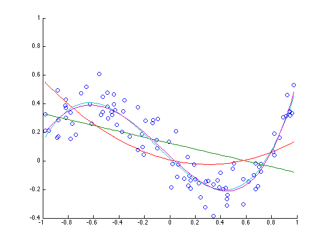
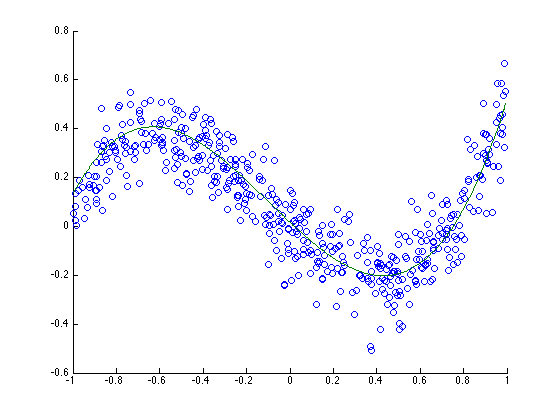

clear all;
close all;
fileX = fopen('Xtrain.txt', 'r');
X = fscanf(fileX, '%f', [inf]);
fileY = fopen('Ytrain.txt', 'r');
Y = fscanf(fileY, '%f', [inf]);
hold all;
scatter(X,Y);
for d = 1:4
W = ones(100, 1+d);
for i = 1:d
W(:, i) = X.^(d+1-i);
end
B = W\Y;
plot(X, polyval(B, X));
end
B3 = zeros(4, 1);
B10 = zeros(11, 1);
errors = zeros(10, 1);
for d = 1:10
W = ones(100, 1+d);
for i = 1:d
W(:, i) = X.^(d+1-i);
end
B = W\Y;
if(d == 3)
B3 = B;
end
if (d == 10)
B10 = B;
end
error = 0;
for j = 1:100
e = (Y(j) - dot(B,W(j, :)'))^2;
error = error + e;
end
errors(d) = error;
end
errors
fileX = fopen('Xtest.txt', 'r');
X_test = fscanf(fileX, '%f', [inf]);
fileY = fopen('Ytest.txt', 'r');
Y_test = fscanf(fileY, '%f', [inf]);
figure
hold all;
scatter(X_test, Y_test);
plot(X_test, polyval(B3, X_test));
X_powers = ones(500, 11);
for d = 1:10
X_powers(:, d) = X_test.^(11-d);
end
error3 = 0;
for i = 1:500
prediction = dot(B3, X_powers(i, 8:11));
e = (prediction - Y_test(i))^2;
error3 = error3 + e;
end
error3
error10 = 0;
for i = 1:500
prediction = dot(B10, X_powers(i,:));
e = (prediction - Y_test(i))^2;
error10 = error10 + e;
end
error10
errors =
4.5427
3.4368
0.9714
0.9537
0.9393
0.9348
0.9347
0.9331
0.9301
0.9092
error3 =
5.1577
error10 =
5.7307
 